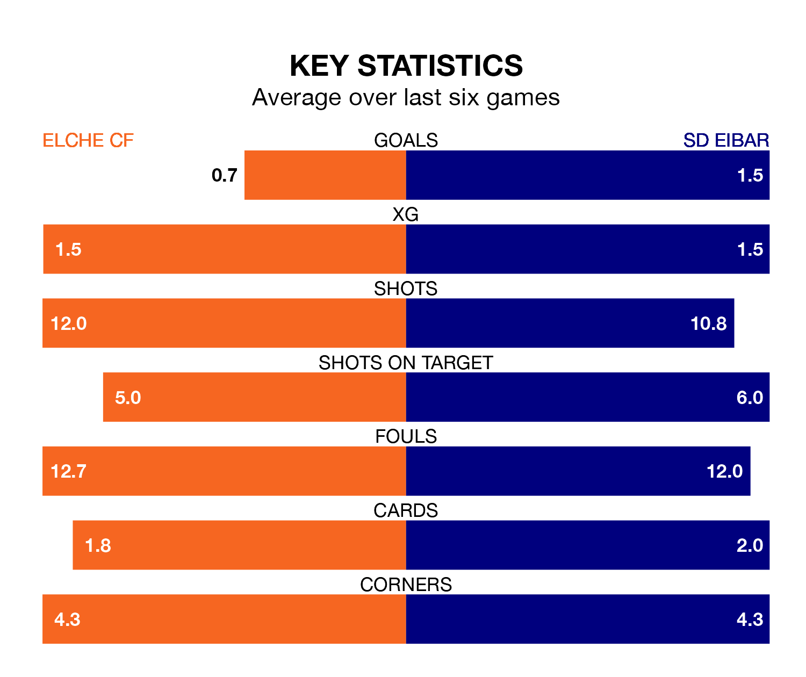

SD Eibar face Elche CF on Sunday seeking to protect their long unbeaten run in the Segunda División.
Eibar are unbeaten in six, with four wins and two draws, ahead of the 8pm kick-off.
They face an Elche team who have won three and drawn two over the same number of games.
With 42 goals in 26 games so far this season, Eibar are the league's highest scorers with 1.6 goals per game. But they are conceding more than average too, letting in 30 goals at a rate of 1.2 per game.
Elche, meanwhile, are below average scorers, with 1.0 goal per game, compared to a league average of 1.1. They have conceded 0.9 goals per game.
The visitors are second in the table after 26 games, of which they have won 13 and drawn six, earning 45 points.
The home team are five places behind Eibar in seventh, with 11 wins and seven draws putting them on 40 points.
In Juan Carlos Arana Gómez, Jon Bautista Orgilles and Juan Diego Molina Martínez, Eibar have three of the league's most on-form strikers so far this season. They have notched nine goals each, to sit seventh in the scoring charts.
Elche's top scorer, with seven goals in 21 games, is Óscar Plano.
Elche's last match was on February 10, a 1-0 loss against SD Amorebieta.
Eibar beat Real Zaragoza 1-0 last time out, on February 11, with Bautista Orgilles on the scoresheet.
Updated: 09:02 (UTC), 13/02/24